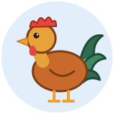

雞的祕密
三個祕密，快來看！
我們每天吃的蛋，是雞媽媽生的。你知道雞還有哪些祕密嗎？

第1個祕密
雞的身體
- 1
雞冠：頭上紅紅的，像小帽子。
- 2
肉垂：下巴下面也紅紅的，會晃來晃去。
- 3
嘴巴：尖尖硬硬的，用來啄東西吃。
- 4
爪子：可以抓地，把小蟲挖出來。
- 5
羽毛：讓身體暖暖的，也保護身體。
雞沒有牙齒！
雞吃東西，是整個吞下去。
所以，雞會吞小石頭。小石頭在肚子裡的「砂囊」，幫忙把食物磨碎。
第2個祕密
雞會說話
雞會用不同的叫聲，告訴別的雞發生了什麼事。
咕咕咕，快來吃！
雞媽媽找到好吃的東西，會咕咕叫，叫小雞過來吃。
小心！老鷹來了！
雞看到天上的老鷹，跟看到地上的動物，叫聲不同。別的雞聽了，就知道要往哪裡躲。
喔喔喔！公雞叫了
公雞會大聲叫。牠們早上會叫，白天也會叫喔！
第3個祕密
雞是恐龍的親戚
很久很久以前，地球上有恐龍。有些恐龍，慢慢變成了鳥。雞也是鳥，所以雞是恐龍的遠房親戚！
腳印好像！
雞的腳印有三根長長的腳趾，很多恐龍的腳印也是這樣。
都有羽毛！
雞身上有羽毛。有些恐龍的身上，也長著羽毛喔！
跟雞做朋友
-
輕輕摸，別追牠。
-
摸完雞，要用肥皂洗手。
-

去農場看雞，要跟著大人喔！
給爸爸媽媽看（比較詳細的說明）
- 砂囊：也叫肌胃。雞沒有牙齒，會主動吞下小石子或砂粒，存在肌胃裡；肌胃的厚肌肉收縮時，砂粒就像石磨一樣把穀粒磨碎。
- 會「說話」的叫聲：動物行為研究發現，雞看到空中的猛禽和地面的掠食者時，會發出不同的警戒叫聲，同伴聽到後的反應也不同（例如看天空、蹲低躲藏，或是站高張望）。雞媽媽找到食物時也會發出特定叫聲呼喚小雞。
- 公雞啼叫：多半在天亮前後，受生理時鐘影響，但白天也會因為光線、聲音或其他公雞而啼叫。
- 恐龍的親戚：鳥類是從獸腳類恐龍演化而來的，現生鳥類常被視為恐龍的後代。許多獸腳類恐龍的化石保留了羽毛痕跡，足跡也常是三趾朝前。頁面上「有些恐龍慢慢變成了鳥」是給小朋友的簡化說法。
- 衛生：家禽身上可能帶有沙門氏菌，摸過雞或雞蛋後，請帶孩子用肥皂洗手。
注音是逐字人工標注的；「一」和「不」的變調容易混淆，這頁的文字盡量避開，方便孩子自己唸。